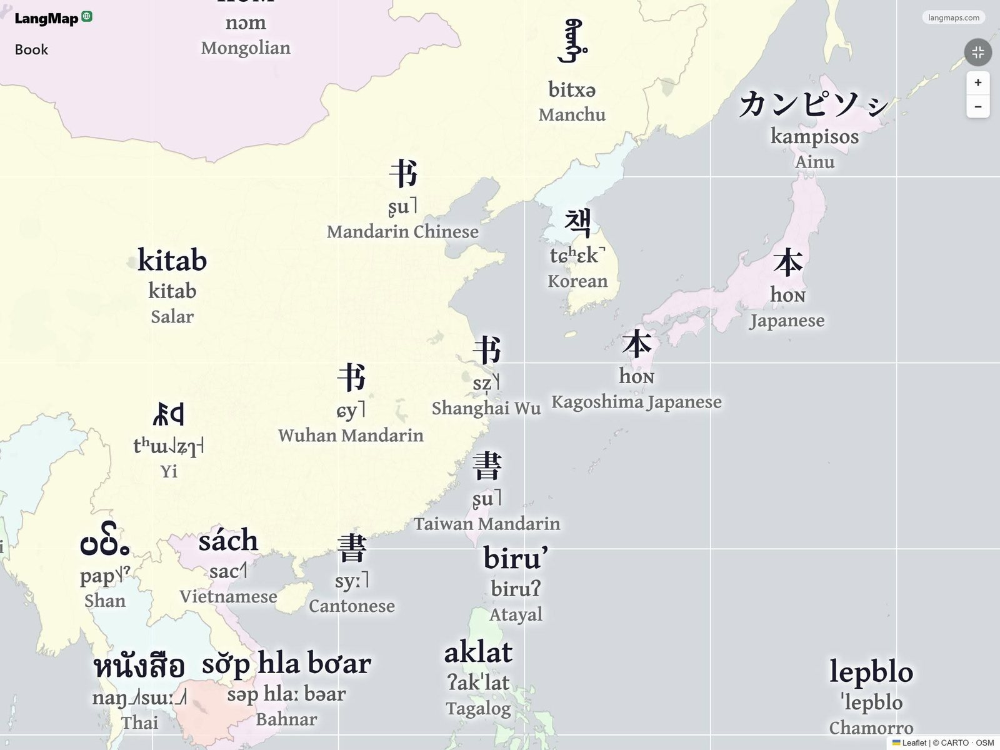

Why does so much of Asia count things this way?
- Chinese, Vietnamese, Korean and Japanese are not one language family.
- Yet all four make you choose special words when you count things.
- And once you look across Asia, the pattern becomes hard to explain as coincidence.

Contents
Three books, four ways
English usually says:
three books
No extra word is needed.
But in Chinese:
🇨🇳 三本书 (sān běn shū)
In Vietnamese:
🇻🇳 ba quyển sách
In Korean:
🇰🇷 책 세 권 (chaek se gwon)
And in Japanese:
🇯🇵 三冊の本 (san-satsu no hon)
All four mean "three books."
The counting words are different:
本 (běn) / quyển / 권 (gwon, 卷) / 冊 (satsu)
All of them serve here as counters for books.
But the basic idea is similar.
You do not simply say "three + book."
You count the books through a category.
Flat things, long things, animals, machines
And books are only the beginning.
Chinese has classifiers for flat things, long things, animals, vehicles and much more.
For example:
张 (zhāng) = counter for many flat things
条 (tiáo) = counter for many long or narrow things
Vietnamese has:
con = counter for many animals
tờ = counter for sheets
cây = counter for many long rigid things
quyển / cuốn = counters for books
Korean uses:
마리 (mari) = counter for animals
대 (dae, 台) = counter for machines and vehicles
권 (gwon, 卷) = counter for books
Japanese has:
匹 (hiki) = counter for small animals
枚 (mai) = counter for flat things
台 (dai) = counter for machines and vehicles
冊 (satsu) = counter for books
Notice something already.
Korean 대 (dae, 台) and Japanese 台 (dai) use the same Chinese character for counting machines and vehicles.
Korean 권 (gwon, 卷) and Vietnamese quyển also go back to the same character 卷, and both are used for books.
At first, the explanation seems obvious.
Maybe this all came from Chinese.
Not just Chinese
But then the problem starts.
Thai has classifiers too.
So do Hmong languages.
So does Burmese.
And many other languages across Southeast Asia do the same thing.
These languages are not all descendants of Chinese.
They are not even close relatives.
Yet they share the same basic habit:
when you count something, you often classify it at the same time.
That is the first clue.
Same family, different grammar
Now comes the stranger part.
Vietnamese belongs to the Austroasiatic language family.
Travel west into India, and you find other languages from that same large family, especially the Munda languages.
They are relatives of Vietnamese.
But many of them have much weaker classifier systems, or none comparable to Vietnamese.
Same ancestry.
Different place.
Different grammar.
Now look at Chinese.
Mandarin belongs to the Sino-Tibetan family.
It has a very developed classifier system.
But other languages in the same broad family, especially farther toward Tibet and the Himalayas, may have far less developed systems.
Again:
same family,
different neighborhood,
different result.
A linguistic neighborhood
And that is where the mystery starts to clear.
The classifier pattern often follows geography more closely than ancestry.
In other words, languages may become similar not because they share a common ancestor, but because their speakers have lived next to one another for centuries.
Chinese, Vietnamese, Thai, Hmong, Burmese and many other languages have been in contact for a very long time.
People traded.
Migrated.
Intermarried.
Changed rulers.
Shared religions.
Borrowed words.
And over enough time, languages can begin to borrow not only vocabulary, but also habits of grammar.
Linguists call a region like this a Sprachbund, a linguistic area.
East and Southeast Asia form one of the great examples.
Some researchers go even further.
They have suggested that numeral-classifier systems may have spread through contact across Asia from an earlier center, instead of being invented separately in every language family.
That idea is still debated.
But the geographical pattern is striking.
And Korean and Japanese make the story even more interesting.
They sit farther from the core of Mainland Southeast Asia, yet both developed extensive counter systems of their own.
They also absorbed many Chinese-derived counting words.
One book, four languages
So when we say:
🇨🇳 一本书 (yì běn shū)
🇻🇳 một quyển sách
🇰🇷 책 한 권 (chaek han gwon)
🇯🇵 一冊の本 (issatsu no hon)
all meaning "one book,"
we are not just looking at four translations.
We may also be looking at the traces of an old linguistic habit that spread across a huge part of Asia.
Not one language family.
Not one writing system.
Not one country.
But one enormous linguistic neighborhood.
Maybe the most surprising thing about classifiers is this:
In this part of the world, geography may have shaped grammar almost as strongly as ancestry did.